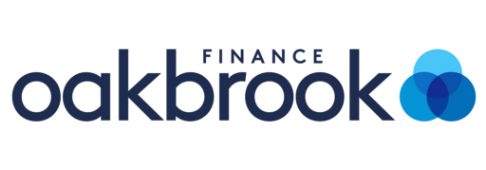
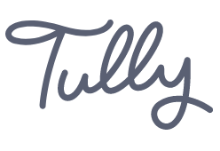
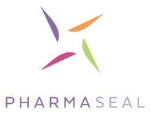
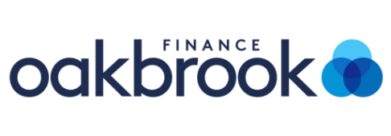
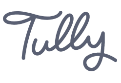
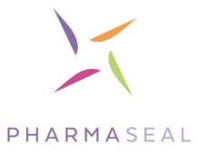

An experienced guide
Mentoring & Coaching
As a coach for creative types and an experience mentor, I [...]
Hi, I’m Tom. I’m a mentor & coach for creative people and am also UX design consultant with over a decade of experience in the design industry.
 





Having worked in both the business and consumer spaces, I understand everyone is unique. With each client I tailor my approach to accommodate individual contexts, bringing focussed collaboration and a mentoring mindset to ensure we all learn and grow together.
This leads to happy customers and effective solutions designed to create the best possible outcome for every project. I want to put people first each and every time.
As a coach for creative types and an experience mentor, I [...]
The centre of any high-performing website or app is a thoroughly-explored UX strategy and a killer UX design to bring it to life. We’ll explore your audience, product and business to create something highly effective that your customers will return for.
Nottingham-based life sciences startup PHARMASEAL approached me to facilitate a four-day Design Sprint to design a cornerstone feature of their clinical trial management product.
Working with Product Director Ricky Lakhani and his team, we unpacked the challenges PHARMASEAL were facing, explored their users’ journey, and collaborated on a best-fit-for-launch design solution.
At the end of the Sprint the team were equipped to build the solution into their existing product, ready for introduction to their customers.
Tom set about understanding our problem, our market fit, and set out a structure-yet-flexible approach to help us meet our goals. Working through a Design Sprint with Tom could not have been a more fun, productive and engaging experience.
Ricky Lakhani
Director of Product Management, Pharmaseal

I worked with Project Manager Jess Salisbury to design an end-to-end app concept for a new finance product. Translating existing high-level concepts and user flow, I created a wireframe prototype demonstrating the product’s intent and user journey to key stakeholders within and outside the business.
Following our project’s completion the concept prototype aided Jess' team in successfully securing investment funding to move the product into the next phase of development.
It was a pleasure working with Tom to realise our product concept. He grasped what we were looking to achieve and carved a clear path to the outcome we needed. Tom facilitated highly productive sessions with a short deadline. I had complete trust in him to take the project forward.
Jessica Salisbury
Project Manager, Tully
Spotlight’s directors Tom and Tim initially approached me to help them better understand one of their key customers. As an engineering-led company, both directors understood that bringing user insight and real-world feedback into their could transform their processes for the better.
To date, we have run numerous discovery workshops and co-design sessions which have directly enhanced their software offer and delivered real value for their customers.
Tom not only tried to understand what makes the project tick, but what makes us tick as individuals. He has the ability to make everyone feel open and honest about their project. The sessions were tailored to our needs and really helped us to understand much more than we thought we knew initially.
Spotlight Data Customer
Discovery Workshop, 2019
Beyond his clear abilities as a designer, Tom’s strengths lie in his communication skills on a personal and professional level. I felt confident that he could deliver what I wanted from our very first meeting. The passion and energy he has for his work is infectious.
Jon Mahoney
Director, Digital Health Startup
Every great relationship starts with a conversation; ours should be no different.
I’d love to talk with you about your business, and the design or strategy challenges you’re facing. You are welcome to book time with me for a chat or send me an email to get your next great conversation started.